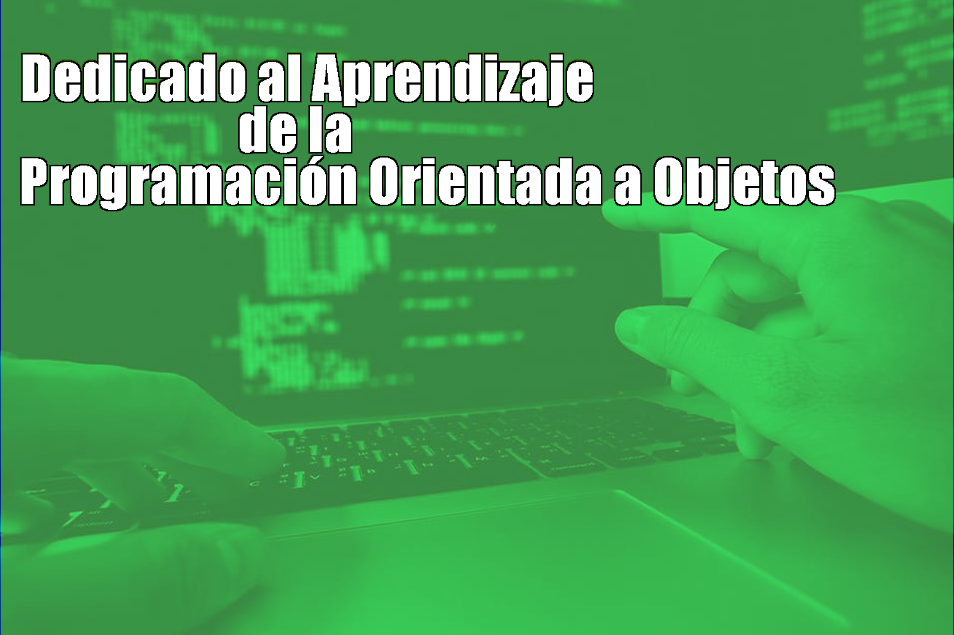

Bienvenido al Portal Web del IUJO
Proposito del Portal
Con el objetivo de "programacion orientada a objetos" o OOP en ingles. Un area informativa principalmente destinada a aquellos estudiantes del segundo y tercer semestre interesados por apredender de POO.
Aqui encontraras los fundamentos de POO y una guia a traves de los diferentes conceptos que lo componen. Si ya eres conocedor del tema y buscas algo en especifico te invitamos a visitar el glosario de terminos, donde podras encontrar el contenido mas destacado en orden alfabetico.
De igual forma puedes ver el indice del contenido informativo en todas las interfaces del portal web, alli tambien encontraras de forma ordenada los contenidos.
De lo contrario, empecemos por una indrotuccion al tema, y para hablar de programacion orientada a objetos, debemos comenzar por la programacion en si y sus fundamentos.
Introducción al tema
La programación es muy extensa y existen muchas formas de programar, es tan amplia que incluso el proceso de aprendizaje podría ser confuso y frustrante. Hablando en términos generales, a los estilos de programación se les llama paradigmas.El paradigma con el que todos aprendimos a programar es el secuencial o estructurado, aquí las instrucciones van de arriba hacia abajo, no tenemos que abstraer cosas complejas, simplemente damos ordenes una tras otra
Cuando empiezas con proyectos más grandes te das cuenta que este paradigma no te ayuda mucho.
La Programación Orientada a Objetos (POO) es un paradigma de programación, es decir, un modelo o un estilo de programación que nos da unas guías sobre cómo trabajar con él. Se basa en el concepto de clases y objetos. Este tipo de programación se utiliza para estructurar un programa de software en piezas simples y reutilizables de planos de código (clases) para crear instancias individuales de objetos.
Con el paradigma de Programación Orientado a Objetos lo que buscamos es dejar de centrarnos en la lógica pura de los programas, para empezar a pensar en objetos, lo que constituye la base de este paradigma. Esto nos ayuda muchísimo en sistemas grandes, ya que en vez de pensar en funciones, pensamos en las relaciones o interacciones de los diferentes componentes del sistema. Un programador diseña un programa de software organizando piezas de información y comportamientos relacionados en una plantilla llamada clase. Luego, se crean objetos individuales a partir de la plantilla de clase. Todo el programa de software se ejecuta haciendo que varios objetos interactúen entre sí para crear un programa más grande.
Al programar orientado a objetos tenemos que aprender a pensar cómo resolver los problemas de una manera distinta a como se realizaba anteriormente, en la programación estructurada. Ahora tendremos que escribir nuestros programas en términos de clases, objetos, propiedades, métodos y otras cosas que veremos rápidamente para aclarar conceptos y dar una pequeña base que permita soltarnos un poco con los conceptos de este tipo de programación.¿Ahora que sigue?
No te preocupes, a partir de este punto empieza tu aventura a traves del mundo de la programacion orientada a objetos.
Pasemos página y veamos más a fondo de que trata POO.